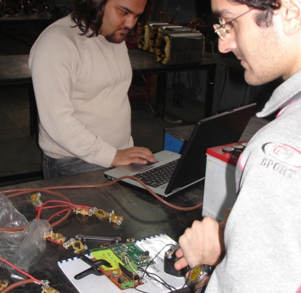
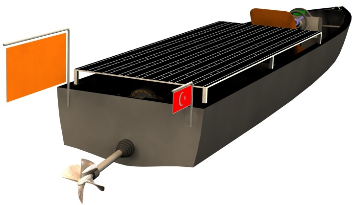
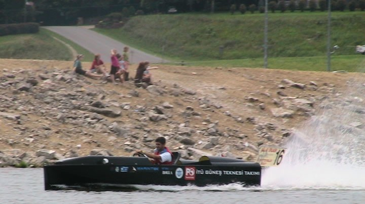
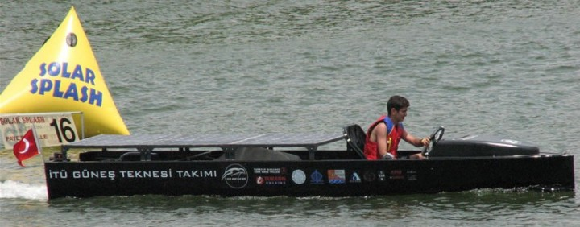

|
2006 yýlýnda yarýþmaya katýlmak için hazýrlanmaya devam ettik. Sponsorlarýmýz arasýna Petrol Ofisi, Deniz Ticaret Odasý ve Marintek de eklendi. Bu firmalardan aldigimiz destekle teknemizin imalatýný tamamladýk ve deniz testlerine baþladýk. 2006 mayýs ayýnda teknemizi havayolu ile ABD'ye nakledecek durumdayken çýkan bir nakliye sorunu yüzünden Solar Splash 2006 yarýþmasýna da katýlamadýk. Reçine ve makina yaðýna bulanmýþ bir þekilde, burunlarýmýz lehim kokusuyla tahriþ olmuþ olarak geçirilen koca bir yýlýn ardýndan yarýþmaya katýlamamak takýmýn moralini ciddi þekilde bozdu. Ancak kýsa bir süre sonra toparladýk ve Solar Splash 2006 yarýþmasýna katýlamamýþ olmamýzýn, Nusrat'ýn tüm sistemlerini daha da geliþtirmek ve daha fazla test yapmak için bize koca bir yýl verdiðinin farkýna vardýk ve çalýþmalara yeniden sarýldýk.

2007 yýlýnda takýmýn sponsorlarý arasýna Türk Hava Yollarý, Turkon Holding ve Argos Yatçýlýk da eklendi. Turkon sayesinde teknemizin ABD'ye ve sonrasýnda Türkiye'ye nakledilmesini saðladýk. THY, takýmýmýzýn resmi ulaþým sponsoru oldu ve ABD'ye gidiþ-dönüþ biletlerimizi saðladýlar. Argos Yatçýlýk da takýmýmýzýn ÝTÜ Göleti'nde yapacaðý deneylerde kullanmasý için bir konteyner saðladý ve bu konteyner sayesinde çok büyük bir esneklik kazanmýþ olduk.
Yukarýda deðinmiþ olduðum gibi biz, Nusrat'ýn bizim üretebileceðimiz her parçasýný kendimiz, bir Ar-Ge takýmý bilinciyle tamamladýk. Bu yüzden teknemizde kullandýðýmýz ekipmanlar onlarýn hazýrlarýna nazaran bize çok daha fazla zamana ve paraya mal oldular. Söylerken þu, þu, þu devreleri biz yaptýk, þu dümeni biz tasarladýk diyoruz ancak bunlarýn yapýlmasý, prototipte çýkan sorunlarýn son ürüne varýlýncaya kadar düzeltilmesi bize ciddi maliyetler getirdi. Ancak bunlar sonrasýnda biz, "Nusrat'ý biz yaptýk diyebiliyoruz.." Artýk bir güneþ enerjisiyle çalýþan tekneyi $30.000 - $40.000 'a yapabilecek durumdayýz ancak teknemizi imal etme, takýmýmýzý ve teknemizi ABD'ye ulaþtýrma ve ABD'de konaklama masraflarýyla birlikte 3 yýlda teknemiz için sponsorlarýmýz yardýmýyla yaklaþýk $150,000 harcadýk.
Yonca-Onuk Tersanesi, Petrol Ofisi, Deniz Ticaret Odasý, Marintek Deniz ve Yat, Türk Hava Yollarý, Turkon Holding, BGM Technical Works, Türk Loydu, Çelik Tekne Tersanesi, Rolla Propellers, Derya Marine Servis, MSI Dergisi, Delta Marine, UKS elektronik ve Ýletiþim, Femsan DC Motor Fabrikasý, Gümüþel Rulman, Eriþ Pervaneleri, Turna Makina Sanayi, Varsan Makina Sanayi, Demir Mali Müþavirlik firmalarýnýn destekleri sayesinde Nusrat'ý ABD'de ülkemizi temsil edebilecek seviyeye getirebildik.
Sizler aracýlýðý ile Türk Gencine güvenen ve güneþ enerjisiyle çalýþan araçlarýn yaygýnlaþmasý için çabalayan çevreye duyarlý bu firmalara teþekkür etmek istiyoruz.

Farklý dallarda ödül kazandýnýz; Sizi yarýþan diðer ekiplerden farklý kýlan neydi? Hangi özelliklerden ve farklýlýklardan dolayý kazandýnýz?
Yukarýda da deðindiðim gibi, teknemizin bütün önemli parçalarýný biz yapmýþtýk. Sadece motoru ve güneþ panelini hazýr aldýðýmýzý söyleyebilirim. Bunlarý zaten bu performansta malesef ülkemizde üretemiyoruz. Aldýðýmýz tasarým ödellerinden
- Best Electrical System Design (en iyi elektrik sistemi dizayný)
- Best Solar System Design (en iyi güneþ enerjisi sistemi dizayný)
Ödüllerini bu kendi özgün tasarýmlarýmýz olan sistemler sayesinde aldýk. Tüm diðer ekipler bu sistemleri hazýr alarak kullanmýþlardý. Yarýþma organizatörleri de bu ve pek çok farklý sistem tasarýmýmýza hayran kaldýlar. Biz diðer tasarým ödüllerini alamamýþ olmamýzý biraz da "tüm ödülleri bize vermek istemediler" diye yorumluyoruz.
Bunlar dýþýnda
Best Visual Display (en iyi görsel tanýtým ödülüne) layýk görüldük. Yarýþmada teknenizi, ülkenizi ve okulunuzu anlatan bir görsel sunum hazýrlamanýz gerekiyor. Biz bu sunum için 3 poster hazýrladýk. Bunlardan biri Türkiye, ÝTÜ ve sponsorlarýmýzýn tanýtýlmasýna diðer ikisi ise teknemizin tanýtýlmasýna ayrýlmýþtý. Bunun dýþýnda teknemizin tasarým, imalat ve test aþamalarýnda çektiðimiz bir tanýtým filmimiz vardý. Bu filme Kültür Bakanlýðý'nýn hazýrlatmýþ olduðu Türkiye Tanýtým Filmleri'ni de ekledik, bunu da hem bize ayrýlan alandaki beyaz perdemize hem de ara ara, skorlarýn yayýnlandýðý dev ekrana yansýttýk. Bunlar dýþýnda giderken yanýmýzda 50 kutu Türk Lokumu götürdük ve teknemizi görmek için gelen ziyaretçilere ikram ettik. Yarýþma komitesi hem teknemizi, hem okulumuzu hem de ülkemizi diðer takýmlara göre daha iyi tanýttýðýmýza karar verdiler.
Bunlar dýþýnda
Best Rookie Team - (en iyi çaylak takým)
Ödülünü aldýk. Bu ödül, yarýþmaya ilk katýlan takýmlar arasýnda en yüksek puanla yarýþý bitiren takýma verilen bir ödül. Biz sadece bu ödülü almakla kalmadýk, Solar Splash tarihinde ilk katýlýþýnda en yüksek puaný alan takým olduk..
Third Place Solar Slalom (Manevra Etabý Üçüncülüðü)
Ödülü, yarýþmanýn Slalom etabýnda en iyi üçüncü zamanlamayý yaptýðýmýz için kazandýðýmýz bir ödüldü. Bu etapta malesef ikinciliði 20 saliseyle ve birinciliði de bir saniye ile kaçýrdýk.
Son olarak ve tabi en önemlisi
Third Place Overall - (Genel Toplamda Dünya Üçüncülüðü)
Ödülünü aldýk. Katýlýnan tüm etaplardan toplanan puanlara göre genel toplamda dünya üçüncülüðü ödülünü aldýk. Bunu da tabii yarýþma kurallarýný özümseyerek belirli kýsýtlar dahilinde hem yüksek sürat yapabilen, hem muhteþem manevra kabiliyetine sahip hem de düþük hýzda çok uzun mesafeler gidebilen bir araç tasarlamýþ olmamýza borçluyuz. Nusrat, sprint etabi konfigürasyonuyla 23 knot hýza ulaþabiliyor ve endurance konfigürasyonuyla da 2 saat boyunca 7 knot hýzla seyredebiliyor. Tabi bu hýzlar okurlarýnýzý yanýltmasýn, bunlar güneþ enerjisiyle çalýþan bir aracýn yapabileceði maksimum süratler deðil, bunlar Solar Splash yarýþmasýnca konulan kýsýtlamalar dahilinde bizim eriþebildiðimiz süratler ve Solar Splash 2008 yarýþmasýnda sprint hýzýmýzý 30+ knot ve endurance hýzýmýzý 8-9 knot hýzlara çýkarmayý planlýyoruz.


Bu proje size ve ekip üyelerine nasýl bir deneyim kazandýrdý?
Bir güneþ enerjisiyle çalýþan tekne yapmak sadece bir gemi inþaatý mühendisi veya sadece bir elektrik mühendisi'nin altýndan baþarýyla kalkabileceði bir konu deðil. Bu yüzden çalýþmamýzý çok disiplinli olarak yürütmemiz gerekti. Bu da baþka mühendislik dallarýyla yakýn temas kurmamýzý ve onlarýn meslekleri hakkýnda bilgi sahibi olmamýzý saðladý. En büyük getirilerinden biri bu oldu diyebilirim.
Bunun yanýnda, bir aracý baþýndan sonuna tasarlamýþ ve uluslararasý bir yarýþmaya katýlmýþ olmamýzýn, baþta CAD/CAM, tasarým, imalat gibi mühendislik yeteneklerimizin geliþmesine çok büyük faydasý oldu.
Ayrýca, uluslararasý ticaret, proje yönetimi, halkla iliþkiler gibi konularda da çok tecrübe kazandýk. Bunlarý birebir yaþayarak öðrenmiþ olmamýz okulda kazanamayacaðýmýz bazý özelliklerdi.
|